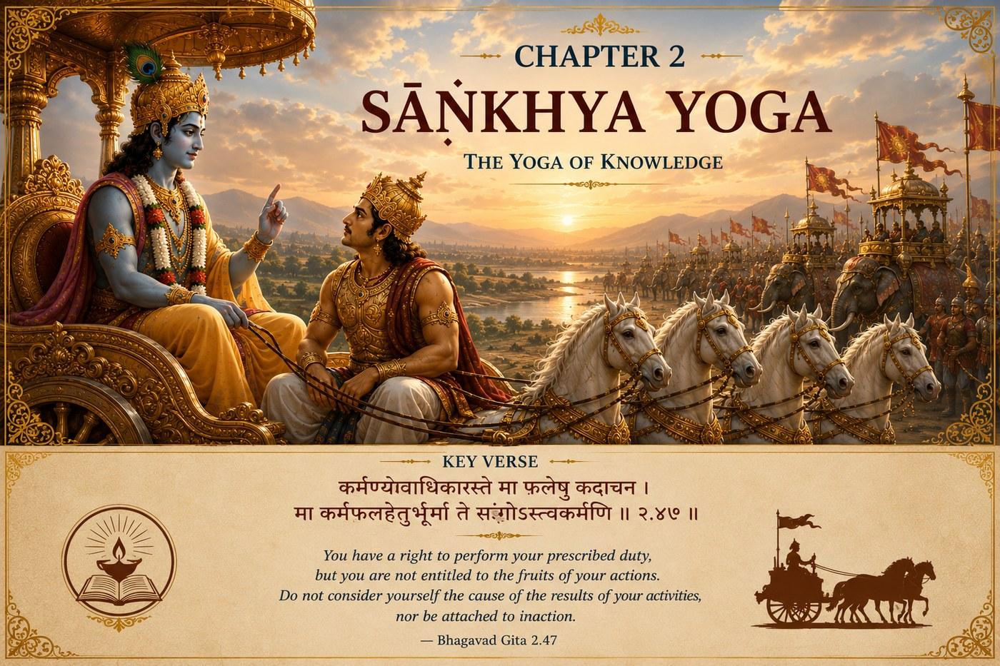

The GITA Project › Week 2 · Chapter 2

Week 2 · Chapter 2 — Sāṅkhya Yoga: The Yoga of Knowledge
Student Theme — Seeing Beyond the Immediate Crisis
Every life has moments where……we realize that emotion alone cannot guide our decisions, and we begin searching for wisdom that endures.
Sometimes life brings us to a place where our old way of thinking is no longer enough. We discover that feelings, while real and important, do not always reveal the whole truth. We begin looking for something deeper. Something lasting. Something that helps us see life more clearly. That is where Chapter Two begins.
One question — When your feelings and the right thing to do point in different directions, which one do you follow?
A moment you may know — You studied hard and still got the low grade. Everything in you says “it was all wasted.” Is that feeling telling you the truth?
This chapter's promise — You will learn the Gita's most famous teaching: how to give your full effort and let go of what you cannot control.
Krishna begins to answer
Arjuna remains seated in his chariot. His bow, Gāṇḍīva, rests beside him. His mind is filled with doubt. His heart is burdened with grief. His arguments seem reasonable. His emotions feel overwhelming.
He has spoken honestly to Lord Shri Krishna. Now, for the first time in the Bhagavad Gita, Lord Shri Krishna begins to respond. He does not dismiss Arjuna's pain. He does not criticize his compassion. Instead, He gently begins leading Arjuna from emotion toward understanding. This is the beginning of one of history's greatest lessons on life.
Where we are in the story. Last week, Arjuna broke down between the two armies and set his bow aside, overwhelmed by the thought of fighting people he loved. He did not pretend to be strong. He admitted his confusion and asked to be taught. That honesty is exactly why Chapter 2 can begin. A student who says “I don't know — please help me understand” has already taken the first real step.
Understanding the SituationEvery one of us experiences moments when our emotions seem larger than our ability to think clearly. A disappointing grade. The end of a friendship. A misunderstanding at home. The fear of failure. The pressure to fit in.
In those moments, our feelings are real. But are they always the best guide? Lord Shri Krishna teaches Arjuna that while emotions deserve to be acknowledged, they should not become the only voice directing our actions. Wisdom begins when we learn to see beyond the immediate moment.
The Court of Dharma™Six steps through Arjuna's question
This is not a courtroom. No one is on trial. It is a place where understanding grows.
- One Situation
- Arjuna is overcome by grief and uncertainty. He no longer trusts his own judgment, and turns to Lord Shri Krishna for guidance.
- One Dilemma
- Should decisions be based only on what we feel in the moment, or guided by a deeper understanding of Dharma?
- One Question
- How can I think clearly when my emotions feel overwhelming?
- One Conversation
- Krishna helps Arjuna see himself differently: the body changes and one day passes away, but the Self — the Ātman — is eternal. This is not to ignore emotion, but to see life from a larger perspective. From there He gives a world-changing idea: we are responsible for our actions, not entitled to control every outcome.
- One Virtue
- Wisdom — learning to see clearly what is temporary and what is lasting, and letting Dharma, not fear or pride, guide our choices.
- One Life Practice
- Before reacting this week, pause and ask what is temporary here and what truly lasts. (Full practice below.)
Four verses that carry the chapter
Chapter 2 has 72 verses. We listen closely to four.
Verse 1 — The Self is not the body · 2.13
देहिनोऽस्मिन्यथा देहे कौमारं यौवनं जरा ।
तथा देहान्तरप्राप्तिर्धीरस्तत्र न मुह्यति ॥
dehino 'smin yathā dehe kaumāraṁ yauvanaṁ jarā
tathā dehāntara-prāptir dhīras tatra na muhyati
“As the dweller in the body experienceth in the body childhood, youth, old age, so passeth he on to another body; the steadfast one grieveth not thereat.”
— Bhagavad Gita 2.13 · trans. Annie Besant (1922), public domain — via Wikisource
Words to Remember — dehī the embodied Self · dehe in the body · dhīraḥ the steady, wise one · na muhyati is not deluded.
In plain words. The child you were at five is gone, yet you are still here. Krishna extends that familiar fact: the “you” beneath all your changes is deeper than the body itself.
Reflect: What is one thing about you that has not changed since you were small?
Verse 2 — What is eternal cannot be destroyed · 2.20
न जायते म्रियते वा कदाचि-
न्नायं भूत्वा भविता वा न भूयः ।
अजो नित्यः शाश्वतोऽयं पुराणो
न हन्यते हन्यमाने शरीरे ॥
na jāyate mriyate vā kadāchin nāyaṁ bhūtvā bhavitā vā na bhūyaḥ
ajo nityaḥ śhāśhvato 'yaṁ purāṇo na hanyate hanyamāne śharīre
“He is not born, nor doth he die; nor having been, ceaseth he any more to be; unborn, perpetual, eternal and ancient, he is not slain when the body is slaughtered.”
— Bhagavad Gita 2.20 · trans. Annie Besant (1922), public domain — via Wikisource
Words to Remember — aja unborn · nitya eternal · śhāśhvata permanent · na hanyate is not slain.
Handled with care. This verse gently touches Arjuna's deepest fear — death itself. The Gita's aim here is comfort and perspective, not a reason to treat life carelessly or to avoid grief.
Reflect: Does knowing that something in us is lasting make you more careless, or more thoughtful, about how you live?
Verse 3 — The verse at the heart of the Gita · 2.47
कर्मण्येवाधिकारस्ते मा फलेषु कदाचन ।
मा कर्मफलहेतुर्भूर्मा ते सङ्गोऽस्त्वकर्मणि ॥
karmaṇy-evādhikāras te mā phaleṣhu kadāchana
mā karma-phala-hetur bhūr mā te saṅgo 'stvakarmaṇi
“Thy business is with the action only, never with its fruits; so let not the fruit of action be thy motive, nor be thou to inaction attached.”
— Bhagavad Gita 2.47 · trans. Annie Besant (1922), public domain — via Wikisource
Words to Remember — karmaṇi in action/duty · adhikāra right, authority · phala fruit, result · mā…kadāchana never · akarmaṇi in inaction.
What this verse does not mean
It does not mean “results don't matter” or “don't try hard.” It means: give your whole effort to what is yours to do, and stop trying to own an outcome that was never fully in your hands. You control the quality of your effort; you do not control the result. Anxiety loosens its grip exactly there.
Reflect: Name one thing you did your best on where the result was still out of your hands. How did you respond?
Verse 4 — This balance has a name · 2.48
yoga-sthaḥ kuru karmāṇi saṅgaṁ tyaktvā dhanañjaya
siddhy-asiddhyoḥ samo bhūtvā samatvaṁ yoga uchyate
“Perform action, O Dhananjaya, dwelling in union with the divine, renouncing attachments and balanced evenly in success and failure: equilibrium is called yoga.”
— Bhagavad Gita 2.48 · trans. Annie Besant (1922), public domain — via Wikisource
In plain words. Krishna gives the balance a name. Yoga here means evenness of mind — samatvam — in success and failure. That evenness is not coldness. It is stability: full effort, released outcome, a steady mind that can see Dharma clearly.
Where the clean answer meets a hard edge
Chapter 2 makes a clean-sounding promise — act by duty, release the result. Real life is rarely that clean. The Dharma Lens is where we slow down and look at the hard edges.
A situation without an obvious answer
Maya has trained all year for one audition — first chair in the regional orchestra. The morning of the audition, her closest friend, who has no ride, texts in tears: a family emergency, and no one else can help. If Maya drives her, she misses the audition she may never get again. If she goes to the audition, she abandons a friend in a genuine crisis.
“Do your duty, release the result” — but which duty? To her own hard-earned goal and the people counting on her in the orchestra? Or to a friend in need right now?
This is the real texture of Dharma. It is not a slogan that dissolves hard choices; it is a way of thinking through competing responsibilities — weighing competing duties, honest intention, hidden attachment, and real consequences. The Gita does not hand Maya a rule. It hands her clarity of mind to choose without being ruled by panic, and the honesty to own her choice afterward. There may be more than one defensible answer. What would you weigh?
Character in Practice · WisdomWhat it means. Seeing clearly what is temporary and what is lasting, and letting Dharma guide the choice.
What it does not mean. Being unemotional, having all the answers, or looking clever.
In daily life. Pausing before reacting; asking “what is actually true here?”; choosing thoughtful action over impulse.
How it's misread. As coldness. Wisdom is warm — it simply is not ruled by the feeling of the moment.
Recognizing progress — without self-righteousness. You notice yourself reacting a little slower and choosing a little more freely. Real progress in wisdom makes a person humbler, not superior.
The exam that didn't go your way. The tryout where you gave everything and still didn't make the team. The message you sent carefully that was still misread. In each, verse 2.47 is quietly at work: your effort was yours; the outcome was never fully in your hands. Wisdom is what lets you keep showing up with full effort without being crushed each time the result is out of your control.
Leadership LabImagine you studied diligently for an important exam. You prepared well, asked questions, practiced consistently. When the results are announced, you earn a lower grade than you expected. How do you respond? Do you conclude that all your effort was wasted? Do you compare yourself with others? Or do you recognize that while you cannot control every outcome, you can always control the quality of your effort, your attitude, and your willingness to keep learning?
Lord Shri Krishna's teaching reminds us that excellence is measured first by the integrity of our effort. Results matter. But they do not define our worth.
Discussion Circle- ObserveWhat exactly does Arjuna do at the start of Chapter 2, and what does Krishna do first?
- InterpretIn your own words, what does 2.47 ask us to let go of — and what does it not ask us to let go of?
- ConnectDescribe a time you gave real effort and the result was still out of your control. What did you feel?
- Ethical tensionReturn to Maya's audition. What would you weigh most heavily, and why? Could a thoughtful person choose differently?
- ApplyWhere in your next week could “full effort, released outcome” actually change how you act?
- ChallengeSomeone says, “If I stop caring about results, I'll stop trying.” How would you respond using this chapter?
Purpose: feel the difference between what we control and what we don't — the lived meaning of 2.47. Time: 20 min · Format: groups of 3–4 · Materials: cards, two labeled zones, a marker.
- (5 min) Each student writes 4–5 real situations from student life on separate cards (“how much I revise,” “the exam questions,” “whether my friend forgives me,” “how kindly I speak”).
- (7 min) As a group, place each card in In My Hands or Not In My Hands. Debate the tricky ones — many sit on the border.
- (5 min) For three “Not In My Hands” cards, write the matching effort that is in your hands (result → preparation; forgiveness → a sincere apology).
- (3 min) Groups share one insight.
The Pause-and-See Practice
Whenever something unexpected happens this week, pause before reacting and ask: What am I feeling right now? What do I actually know versus assume? What here is temporary, and what truly lasts? If I were thinking with clarity instead of reacting, what would Dharma ask of me?
You don't need a perfect answer. The goal is to notice. Write one real example in your journal before next week.
1. Personal. Where in your life would you like a little more clarity right now?
2. Dharma. Think of a current situation. What is your part (effort) and what is not yours to control (outcome)?
3. Character. When did you last let a strong feeling make a decision for you? What might wisdom have chosen?
4. Action commitment. One place this week I will give full effort and release the result:
5. A private question (you never have to share this): Is there a result you have been holding onto so tightly that it is stealing your peace?
For a parent or guardian — please listen more than you speak. This is a conversation, not a quiz.
1. Can you tell me about a time you worked really hard on something and it still didn't turn out as you hoped? What helped you?
2. When you were my age, how did you handle disappointment after giving your best?
3. Is there something our family gives its best effort to, without being able to control how it turns out?
Teacher Note — Chapter 2
Objective: students can explain 2.47 in their own words and spot effort-vs-outcome in a real situation.
Sensitive-topic alert: verse 2.20 touches death — keep the framing perspective-and-comfort, not fear.
Likely question: “Doesn't ‘don't be attached to results’ mean I shouldn't have goals?” → distinguish goal (direction of effort) from attachment (needing an outcome to feel okay).
Misconception to avoid: equating detachment with not caring. Detachment = full effort plus steadiness.
Transition to Chapter 3: Arjuna's natural next question — if wisdom is so high, why act at all?
Week in One Minute
- Teaching
- Give your full effort and release your grip on the result.
- Key verse
- “You have a right to perform your prescribed duties, but you are not entitled to the fruits of your actions.” — 2.47
- Dharma insight
- Dharma is a way of thinking through competing duties, not a slogan that erases hard choices.
- Practice
- Pause before reacting; choose wisdom over impulse.
A question to carry forward — What am I holding onto so tightly that it is stealing my peace?
In Chapter 3, Arjuna asks another important question. If wisdom is so valuable, why should we continue acting in the world? Lord Shri Krishna's answer introduces one of the defining principles of the Bhagavad Gita: Karma Yoga — the path of selfless action. The journey from understanding to action is about to begin.
Spiritual practices can support well-being, but students experiencing persistent distress should speak with a trusted adult and, when necessary, a qualified health professional.